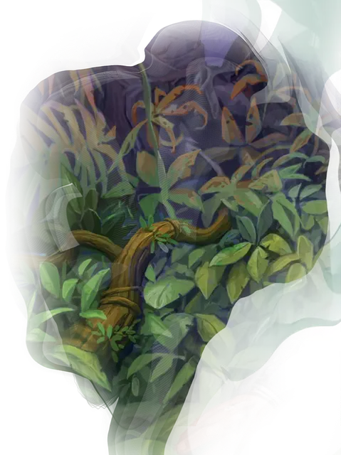

Лоза-убийца
Assassin Vine
Большое Растение, без мировоззрения

Класс Доспеха 13 (природный доспех)
Хиты 85 (10к10 + 30)
Скорость 5 футов, лазая 5 футов
| мод | спас | ||
|---|---|---|---|
| СИЛ | 18 | +4 | +4 |
| ЛОВ | 10 | +0 | +0 |
| ТЕЛ | 16 | +3 | +3 |
| мод | спас | ||
|---|---|---|---|
| ИНТ | 1 | −5 | −5 |
| МДР | 10 | +0 | +0 |
| ХАР | 1 | −5 | −5 |
Сопротивление урону огонь, холод
Иммунитет к состояниям ослепление, сбивание с ног, глухота, истощение
Чувства слепое зрение 30 футов, пассивное Восприятие 10
Опасность 3 (700 опыта)
Бонус мастерства +2
Особенности
Обманчивая внешность. . Пока лоза-убийца остаётся без движения, она неотличима от обычного растения.
Действия
Сжимание. . Рукопашная атака оружием: +6 к попаданию, досягаемость 20 футов, одно существо. Попадание: Цель получает 11 (2к6 + 4) дробящего урона и становится схваченной (Сл высвобождения 14). Пока цель схвачена, она опутана и получает 21 (6к6) урона ядом в начале каждого своего хода. Лоза может сжимать только одну цель за раз.
Опутывающие лозы. . Лоза-убийца может оживить обычные лозы и корни в 15-футовом квадрате земли в пределах 30 футов от неё. Эти растения превращают землю в этой области в труднопроходимую местность.
Когда эффект начинается, существа в этой области должны преуспеть в спасброске Силы Сл 13, иначе будут опутаны лозами и корнями. Опутанное растениями существо может использовать своё действие, чтобы пройти проверку Силы (Атлетика) Сл 13, освобождаясь при успехе. Эффект заканчивается через 1 минуту или в тот момент, когда лоза-убийца умирает или снова использует Опутывающие лозы.
Описание
Лоза-убийца — ходячее растение, само находящее себе удобрения: лоза ловит и удавливает добычу, а затем хранит их тела у своих корней. Обычно она остаётся на месте, если ей не нужно искать добычу.
Взрослое растение состоит из главной лозы длиной около 20 футов, на которой через каждые 6 дюймов растут меньшие лозы длиной до 5 футов. В конце лета на вторичных лозах вырастают грозди мелких фруктов, напоминающие дикий виноград. Плоды жёсткие и сытные, но горькие на вкус.
Подземный вариант растёт вблизи горячих источников, вулканических отверстий и других источников тепла. На продуктах жизнедеятельности живущей под землёй лозы-убийцы нередко процветают колонии грибов и плесени, вырастающие вокруг растения и помогающие скрыть его.